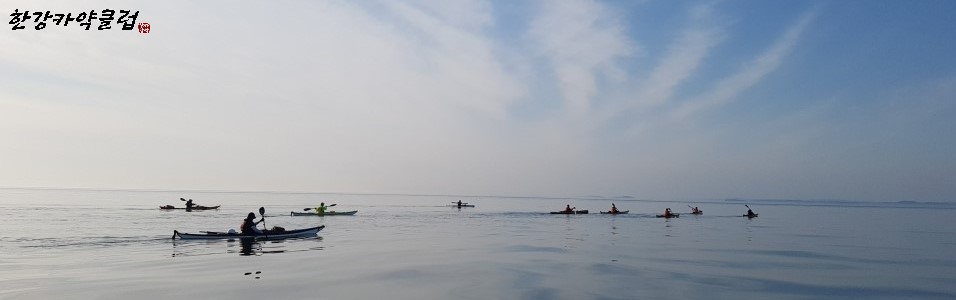
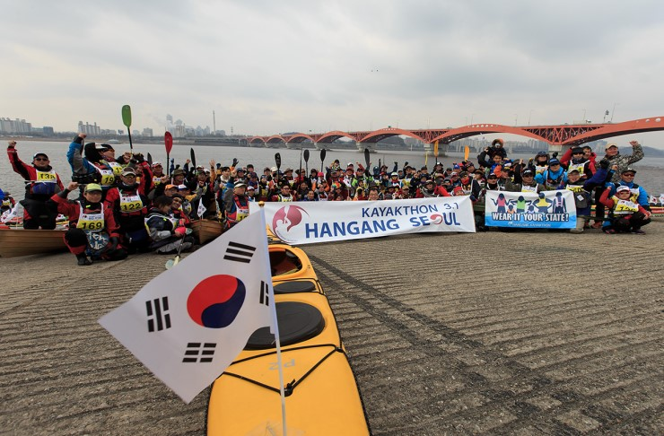

|  |
| 한국어 | English |
|
한강 카약클럽은 카약, SUP, 카누를 즐기는 동호회로 관심있는 분들의 참여를 환영합니다. 저희 클럽은 초보자부터 준전문가까지 모여 카약, SUP, 카누를 통해 좋은 만남을 갖는 순수 동호회 모임입니다. 한강 카약클럽은 강 , 호수, 그리고 바다까지 투어를 하고있습니다. 순수 아마추어 모임이지만, 홍콩 드레곤 대회 같은 국제 대회에도 참가하고 있으며, 국내 각종 카약, SUP 대회에도 참여하고 있습니다. 저희 클럽에 가입하여 한강을 따라, 구름을 따라 함께 패들링합시다. -- 한강카약클럽 (네이버 카페) => https://cafe.naver.com/hmkclub 한강카약클럽 (페이스북 그룹) => https://www.facebook.com/groups/hangangkayakclub/ 한강카약클럽 (페이스북 페이지) => https://www.facebook.com/hangangkayak 한강카약톤 (페이스북 페이지) => https://www.facebook.com/hangangkayathon/ |
 |